地政学
アトランタはジョージア州都であり、南東部の航空、州政治、企業本社、大学、黒人市民運動を束ねる。海港を持たない内陸都市だが、空港と高速道路で米国南部を世界へ接続する結節点だ。選挙政治への影響も強い。

🇺🇸 アメリカ合衆国 / 北米 / World City Atlas
公民権運動の記憶、世界最大級の空港、企業本社、黒人文化、メディア制作、大学研究、郊外化が重なるアメリカ南部の中枢都市。
都市の骨格
アトランタは州都であり、巨大空港と高速道路、大学、メディア企業、黒人教会、郊外住宅地を結びながら、南部の政治と経済を外へ開く都市である。
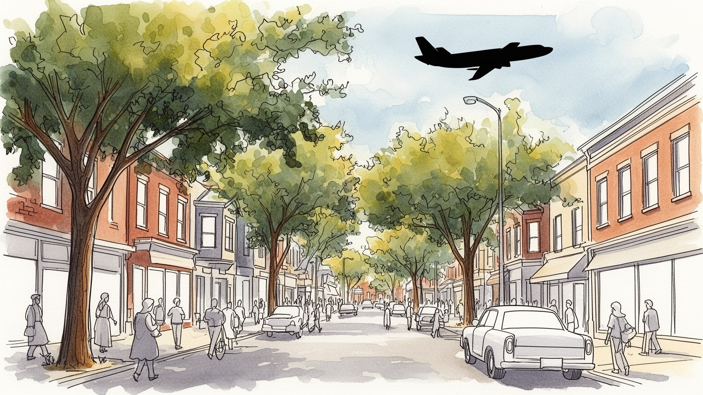
アトランタはジョージア州都であり、南東部の航空、州政治、企業本社、大学、黒人市民運動を束ねる。海港を持たない内陸都市だが、空港と高速道路で米国南部を世界へ接続する結節点だ。選挙政治への影響も強い。
空港、配送、映画制作、放送、金融、医療、大学、企業本社、建設が雇用を広げる。専門職の成長と、倉庫、清掃、警備、飲食、介護、運転の現場労働が近接し、賃金差と通勤距離が街に表れる。労働市場は広い。層も厚い。
黒人教会、公民権運動、ヒップホップ、ゴスペル、映画、南部料理、移民の礼拝所が都市の声を作る。キング牧師の記憶は観光資源であるだけでなく、投票権、教育、住まいをめぐる現在の議論にもつながる。信仰も厚い。
公民権史跡、博物館、緑地、スポーツ、映画ロケ地は訪れやすいが、渋滞、住宅費、郊外の距離、所得格差、夏の暑さも生活を左右する。樹木の多い街並みと高速道路の都市が同時にある。日常の移動が大きな課題だ。
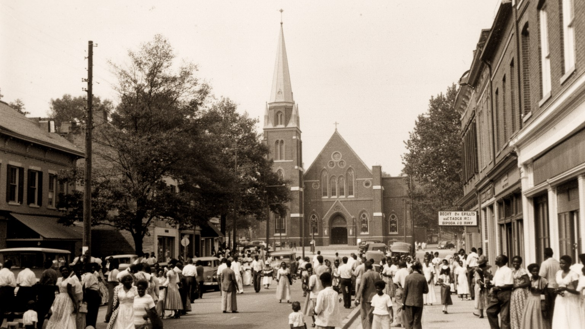
アトランタを理解する出発点は、公民権運動の記憶である。マーティン・ルーサー・キング・ジュニアの生家、エベニーザー・バプテスト教会、記念地区、黒人大学、地域教会は、南部の隔離と差別に抗した市民の組織力を今に伝える。ここでの記憶は過去の偉人をたたえる展示にとどまらない。投票権、学校、住宅、雇用、警察、公共交通をめぐる不平等は、現代の都市政治にも続いている。観光客は整えられた記念空間を歩くが、その周囲には再開発、家賃上昇、黒人住民の転出、教会と地域団体の存続という課題がある。アトランタの公民権史を読むことは、自由を求めた運動がどのように説教、歌、法律、教育、歩行、ボイコット、投票登録へ広がったのかを見ることでもある。記念碑の静けさと、現在の選挙運動や抗議の声は同じ都市の時間に属している。南部の近代化を語る時、この街は融和の象徴として使われてきたが、その言葉が生活の平等を伴うかは常に問われる。学校名、通り名、礼拝の時間、地域新聞、行進の経路は、記憶が制度と生活の両方に残ることを示す。若い世代が歴史を学び直す場も、観光地ではなく市民教育の現場である。博物館の展示と近隣の住宅問題を続けて見ると、歴史の継承が土地の使い方にも関わることが分かる。公民権の記憶は都市の誇りであると同時に、いま誰が安全に住み、学び、投票できるのかを測る物差しである。
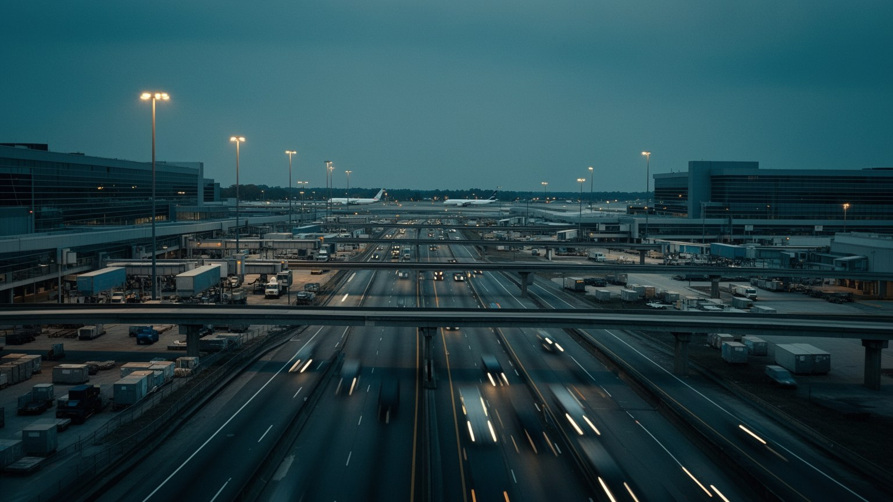
アトランタの都市圏は、ハーツフィールド・ジャクソン空港を抜きに語れない。空港は旅客の乗り継ぎ拠点であるだけでなく、航空会社、整備、貨物、ホテル、会議、レンタカー、飲食、警備、清掃、地上交通を束ねる巨大な労働市場である。海に面しない内陸都市が国際的な存在感を持てた背景には、鉄道都市から航空都市へ移った交通の歴史がある。空港に近い倉庫、配送センター、高速道路、企業の地域拠点は、サンベルトの消費と生産を結び、南東部の市場を外へ開く。便利さの裏側には騒音、大気汚染、シフト労働、低賃金、住宅地との摩擦、長い通勤がある。早朝便を支える清掃員や荷物係、深夜の配送ドライバー、乗り継ぎ客に対応するサービス労働は、都市の表に出にくい。空港はアトランタを世界地図へ載せる装置でありながら、地元の土地利用と住民の健康を左右する施設でもある。路線網が広いほど、災害、感染症、燃料価格、航空会社の戦略変化にも都市は影響を受ける。会議客と観光客が落とす消費は都心を支えるが、空港周辺の自治体には道路整備、騒音対策、雇用の質をめぐる負担も生じる。貨物の速さは小売や医療供給を助けるが、道路の混雑と排出ガスを地域へ残す。その影響は近隣の暮らしに及ぶ。空港都市としての強さは、速さだけでなく、周辺の住宅、賃金、交通、環境をどう管理するかで測られる。
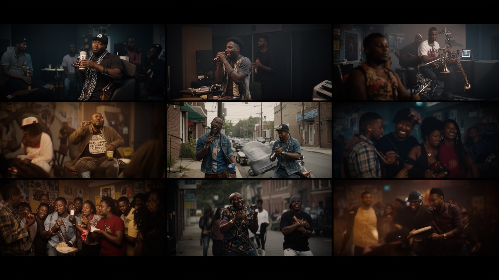
アトランタは黒人文化の中心都市として、政治、信仰、教育、音楽、起業を結びつけてきた。黒人教会と歴史的黒人大学は、公民権運動の組織基盤であると同時に、専門職、教師、牧師、弁護士、芸術家を育てる場でもあった。現代のアトランタでは、ヒップホップ、R&B、ゴスペル、クラブ、ラジオ、映画制作、ファッション、飲食店が黒人中産層と若者の表現を外へ送る。音楽産業の成功は都市のブランドを強めるが、スタジオやイベントの華やかさの背後には、著作権、制作費、夜間労働、若い表現者の住宅費、警察との関係もある。黒人文化は観光用の飾りではなく、差別と排除を経験した住民が自分たちの言葉、事業、学校、信仰、近隣を守ってきた蓄積である。人気地区が再開発されると、文化を作った人びとが家賃高騰で離れる危険もある。アトランタを読むには、記念館だけでなく、教会の掲示、大学のキャンパス、理髪店、ラジオ局、ライブハウス、地元の食堂を見る必要がある。日曜礼拝の歌、スタジオの深夜作業、地域祭り、学校の同窓会は、世代をつなぐ見えにくい公共空間でもある。商業的に成功した音楽の背後にも、家族、地区、信仰、友人関係の網がある。市の外へ広がる郊外にも制作や起業の拠点があり、中心部だけでは文化の地図は描けない。黒人文化はこの都市を世界へ知らせる力であり、同時に都市の公平さを問う最も鋭い声でもある。
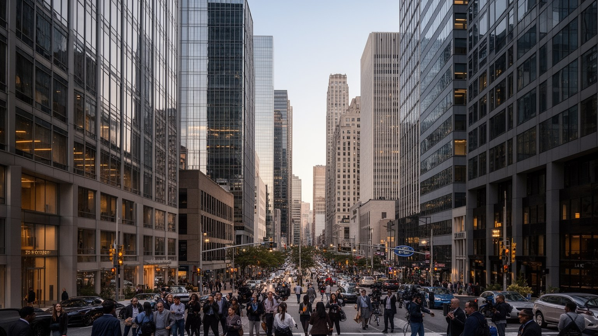
アトランタは南部の企業都市でもある。飲料、航空、配送、通信、金融、小売、医療、テクノロジーの本社や地域拠点が集まり、管理職、営業、法律、会計、広告、IT、コールセンターの仕事を生む。グローバル企業の存在は都市の税収と知名度を高め、会議、ホテル、空港需要を支えるが、企業城下町としての弱さも伴う。意思決定が都心や郊外のオフィスに集まる一方、低賃金のサービス労働や契約労働がその足元を支える。アトランタのメディア産業はニュース、ケーブル放送、映画、配信制作を通じて、南部のイメージを国内外へ届けてきた。ジョージア州の税制優遇により撮影現場も増え、俳優、照明、美術、衣装、編集、警備、宿泊、飲食まで雇用の裾野が広がる。だが制作の仕事は案件ごとに変動し、組合、賃金、長時間労働、表現の多様性が問われる。企業とメディアの都市を読むには、ロゴのある高層ビルだけでなく、撮影スタジオ、配送拠点、広告代理店、清掃員、臨時スタッフ、ニュース編集部を見る必要がある。企業寄付や財団活動は教育や文化を助けることもあるが、公共政策が企業の意向に寄りすぎれば、住民の声は弱くなる。本社の誘致は税制、交通、住宅、学校にも波及し、都市運営の優先順位を変える。問われ方も変わる。都市が何を発信し、誰を雇い、利益をどこへ戻すかが公共性を決める。
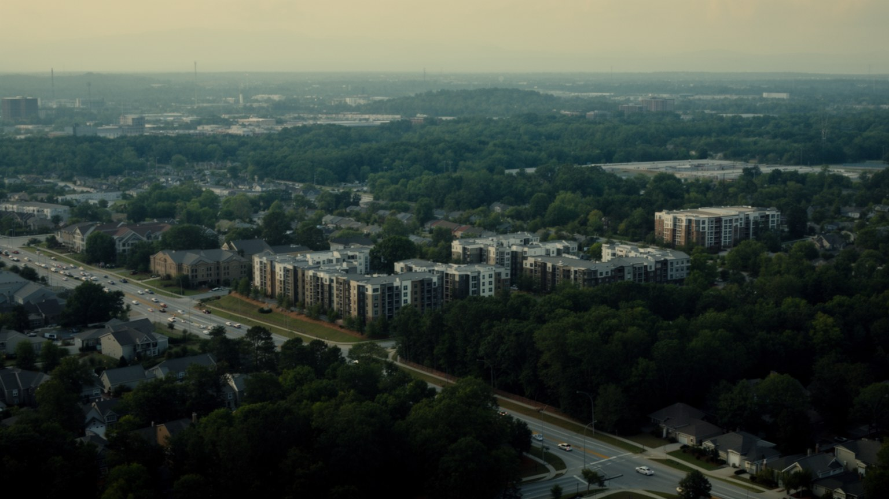
アトランタ都市圏の暮らしは、広い郊外化と住宅市場によって形づくられている。樹木の多い住宅地、袋小路、ショッピングセンター、高速道路沿いのオフィス、低密度の開発は、多くの世帯に庭と車のある生活を与えてきた。一方で、職場、学校、病院、買い物が離れ、車を持たない人や長距離通勤を強いられる人には大きな負担になる。中心部やベルトライン周辺では再開発と集合住宅が進み、歩きやすい街区が増える一方、家賃上昇と固定資産税の負担が長く住む住民を押し出している。住宅の人種隔離、赤線引き、学校区の差、郊外自治体の財政力は、現在の地図にも残る。新しい住宅供給があっても、低所得者向けの賃貸、家族向けの広さ、交通に近い住まいが不足すれば、都市の成長は安心に変わらない。アトランタの住宅を読むには、都心の新築だけでなく、郊外の長い道路、古いバンガロー、退去通知、固定資産税、バスの少ない地区を見る必要がある。家の価格は学校、通勤時間、治安感、洪水リスク、冷房費まで含む生活条件として働く。公共住宅や家賃補助、土地信託、修繕支援が弱ければ、所得の低い世帯は遠くへ押し出される。移転は通学と介護も揺らす。森に包まれた快適な景観と、移動に時間を奪われる日常は同じ都市圏の表裏である。住まいを守る制度が弱いほど、文化を作った住民の居場所も失われる。
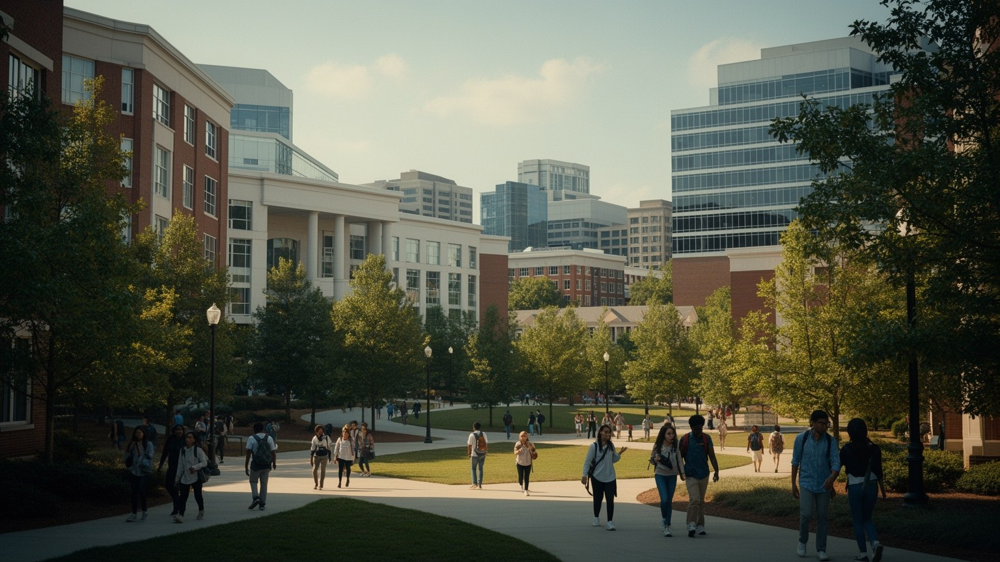
アトランタは大学と研究の都市でもある。ジョージア工科大学、エモリー大学、ジョージア州立大学、モアハウス、スペルマン、クラーク・アトランタなどの歴史的黒人大学群は、工学、医学、公衆衛生、政策、ビジネス、芸術の人材を育てる。疾病対策、病院、生命科学、データ、都市政策の研究は、企業本社や行政、非営利団体とも結びつき、南部全体の知識基盤になっている。大学は高度な雇用を生む一方、学生住宅、研究者の短期雇用、周辺地価の上昇、キャンパス警備、地域との距離という課題も持つ。歴史的黒人大学は、教育機関であるだけでなく、黒人中産層、公民権運動、専門職ネットワークを支えた制度であり、都市の記憶の核である。研究都市を読むには、実験室や講義室だけでなく、奨学金、学生ローン、通学バス、地域診療、図書館、近隣学校との連携を見る必要がある。知識は建物の中で生まれるが、学生が安全に住み、食べ、働き、移動できる条件がなければ根づかない。研究病院や公衆衛生機関は感染症、慢性疾患、環境リスクへの対応でも都市を支える。留学生や第一世代の学生が増えるほど、相談、住居、食料支援、就職支援の制度も重要になる。大学が都市に開かれるほど、研究成果を地域の健康、教育、雇用へ返す責任も大きくなる。アトランタの未来は、企業誘致だけでなく、学びの機会を誰に開くかにもかかっている。
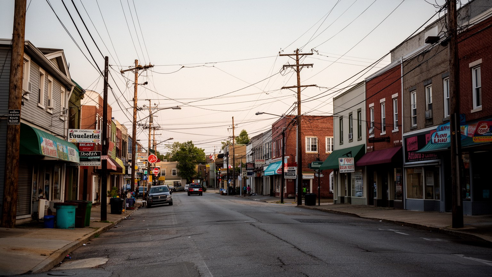
アトランタは黒人文化と南部史の都市であると同時に、新しい移民の到着地でもある。ラテンアメリカ、韓国、中国、インド、ベトナム、エチオピア、ナイジェリア、中東から来た人びとは、郊外のモール、食料品店、教会、寺院、モスク、学校、建設現場、物流施設、介護や飲食の仕事を通じて都市圏を変えてきた。古い中心市街地だけを歩くと、この多様性は見えにくい。移民の生活は高速道路沿いの商業地、アパート、バス路線、送金店、語学学校、子どもの通学に広がっている。サンベルトの成長は温暖な気候、比較的安い土地、企業誘致によって進んだが、その労働の多くは移民と有色人種の住民に支えられている。言語、在留資格、賃金、医療保険、学校での通訳、差別は日常の課題である。食文化や祭りは都市を豊かにするが、移民地区を観光的な異国情緒だけで見ると、制度上の不安は見えなくなる。アトランタを読むには、国際空港の到着口だけでなく、郊外の礼拝所、家族経営の店、深夜の厨房、建設現場、学校の保護者会を見る必要がある。第二世代の若者は南部の英語、家族の言語、オンライン文化を混ぜながら進学し、働き、表現する。移民の増加は学校の給食、医療通訳、宗教休日、地元政治の争点も変える。近隣の標識や店の棚にも変化は表れる。移民は都市に新しい商業と信仰を持ち込み、南部の社会像を更新している。
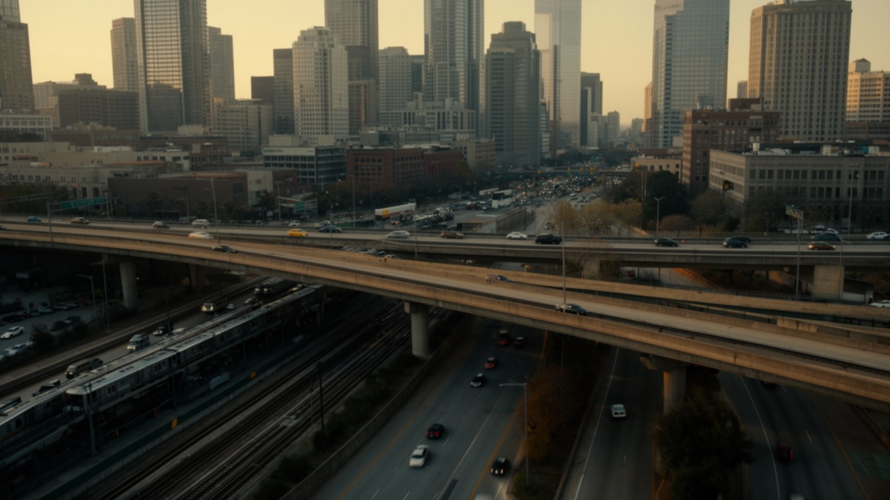
アトランタの地図には、高速道路の力が強く刻まれている。州間高速道路が都心を囲み、郊外の住宅地、オフィスパーク、空港、物流施設、ショッピングセンターを結ぶ一方、道路建設は黒人地区を分断し、中心部の土地利用を大きく変えてきた。車で移動する前提の都市圏では、仕事、学校、買い物、病院へ行く距離が長く、渋滞と駐車が日常の時間を奪う。MARTAの鉄道とバスは都心、空港、一部郊外を結ぶ重要な公共交通だが、路線網、運行頻度、郊外自治体の参加、治安感、駅周辺開発には課題が多い。車を持たない世帯、学生、高齢者、低所得労働者、障害者にとって、公共交通の弱さは雇用や医療へのアクセスを狭める。ベルトラインや自転車道、歩行者空間は新しい都市像を示すが、便利な地区ほど家賃が上がる矛盾もある。アトランタの交通を読むには、空港への速い鉄道だけでなく、郊外バスの待ち時間、歩道の途切れ、炎天下のバス停、深夜勤務後の帰宅を見る必要がある。駅前に住宅と仕事を集める政策は、気候対策と公平性を同時に進める可能性を持つ。通学や通院の短い移動でも、歩道、照明、横断歩道が欠けると生活は不安定になる。バス停の屋根も重要だ。小さな設備も差になる。移動の自由は道路の幅ではなく、誰が安全に、手頃な費用で、少ない時間で目的地へ行けるかによって決まる。
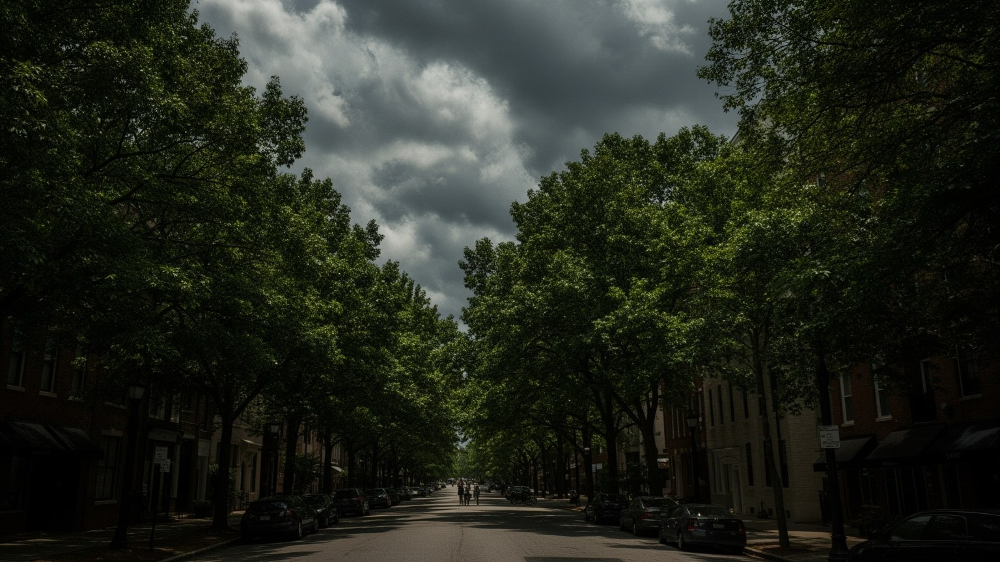
アトランタは「森の中の都市」と語られるほど樹木が多く、住宅地の樹冠は夏の暑さを和らげる大切な資源である。湿った暑い夏、短い冬、強い雨、時折の嵐は、街路、住宅、電力、排水、健康に影響する。木陰は景観の魅力であるだけでなく、熱中症を減らし、雨水を受け止め、空気を冷やし、近隣の歩きやすさを支える都市インフラである。しかし開発で樹木が失われる地区と、豊かな樹冠を守れる地区の差は、所得や人種の格差とも重なる。低所得地域では舗装面が多く、冷房費、停電、洪水、医療アクセスの不足が暑さを危険に変える。気候変動の時代には、住宅の断熱、冷房支援、雨水対策、樹木の管理、送電網の強化が生活政策になる。アトランタの気候を読むには、緑の多い高級住宅地だけでなく、日陰のないバス停、排水の悪い道路、古いアパート、学校の校庭、公園整備の差を見る必要がある。豪雨の後に水が残る交差点や、夏休みの子どもが遊ぶ公園の木陰は、気候適応が生活の細部にあることを示す。樹木の保護は民有地の開発規制、電線管理、住民参加とも関わり、簡単な美化運動では済まない。維持費も公共課題になる。公平性も問われる。樹冠は都市の美しさであると同時に、誰が涼しさと安全を得られるかを示す公平性の指標である。開発と緑を両立できなければ、成長は暑さと水害を増幅してしまう。
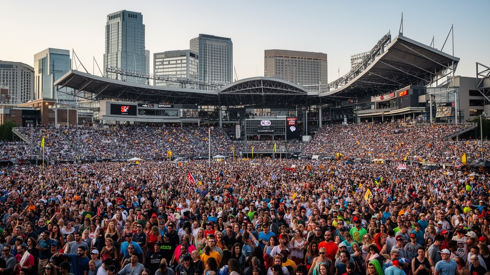
アトランタのスポーツは、都市の成長と市民感情を映す儀礼である。ブレーブス、ファルコンズ、ホークス、ユナイテッドの試合日は、車の流れ、バー、家庭、職場、学校の会話を変える。1996年のオリンピックは都市の国際的な知名度を高め、中心部の再開発や公園整備に影響を与えたが、公共投資、治安管理、低所得者の排除をめぐる議論も残した。スタジアムは観光と消費の装置であり、警備、清掃、飲食、放送、交通、駐車、ホテルの雇用を生む一方、チケット価格や施設への公的負担が問われる。サッカーの人気は移民や若い世代の都市像を反映し、野球やアメリカンフットボールは郊外を含む広い地域の帰属意識を作る。スポーツを読むには、勝敗だけでなく、試合後の公共交通、地元店の売上、清掃員、ユースリーグ、学校のグラウンド、記念式典を見る必要がある。アトランタではスポーツが黒人文化、企業スポンサー、郊外ファン、移民の応援を一つの時間に集める。大学スポーツや高校の試合も地域の誇りを作り、家族や同窓会の時間を街に戻す。地域の公園や体育館は、プロの競技場より静かだが、子どもが都市に所属する感覚を育てる。祝祭は都市を結ぶ力を持つが、高額化と再開発が進むほど、誰がその場に参加できるのかも問われる。市民儀礼としてのスポーツは、都市の誇りと不平等を同時に照らす。
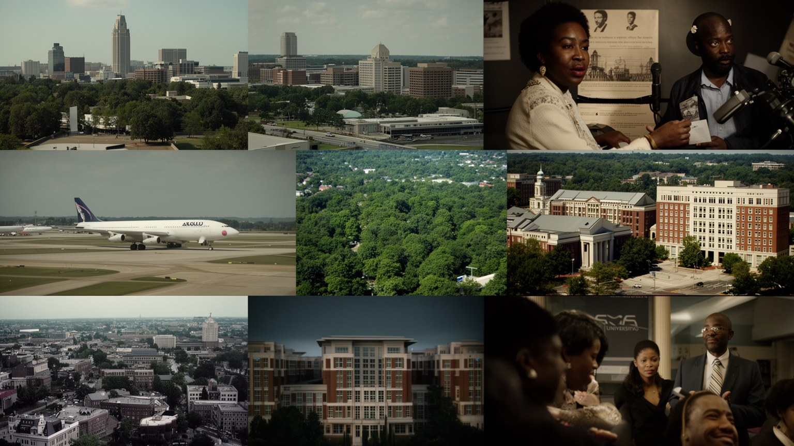
アトランタを読むことは、南部の近代化、公民権運動、航空ネットワーク、黒人文化、企業成長、郊外化を一つの都市圏で重ねて見ることである。都心の高層ビルと空港は国際的な接続を示し、教会、大学、記念地区は自由を求めた運動の記憶を保つ。音楽と映画は都市の声を外へ送り、企業本社と物流は広い雇用を作る。だが、その成功の裏側には、住宅費の上昇、道路に依存する移動、学校区の格差、黒人住民の転出、移民労働の不安、夏の暑さ、公共交通の弱さがある。アトランタはしばしば「新しい南部」の象徴として語られるが、新しさは過去を消すことではない。隔離の歴史、投票権をめぐる闘い、郊外の分断、中心部の再開発は、現在の街路に続いている。訪れる人には空港、公民権史跡、博物館、スポーツ、音楽、緑の住宅地が印象に残るが、住民には通勤、家賃、教育、信仰、暑さ、地域の変化が毎日の課題になる。都市圏の広さは可能性を増やす一方、公共交通、学校、住宅政策を難しくする。中心部、郊外、空港、大学、教会を結んで見ると、この都市の力は点ではなく移動の網にある。複数の層を同時に見る時、アトランタは南部が世界都市へ変わる過程の可能性と矛盾を最も鮮明に示す都市として立ち上がる。都市の価値は成長の速さだけでなく、その成長を公平な生活へ変えられるかに現れる。